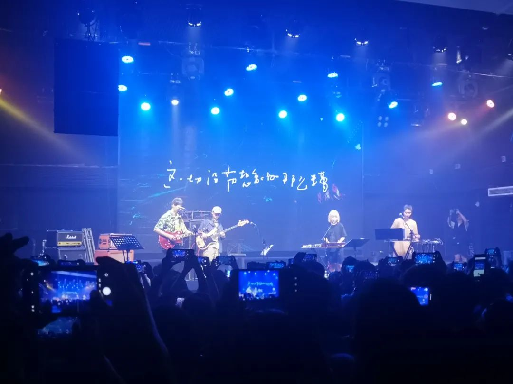

按惯例，是要回顾一下这一年都写了些什么。可是我连去年生日那天写的都看不下去。看不下去就是看不下去。我最讨厌被judge了。放回去年同期的状态下，应该也很讨厌被现在的自己审视。过去一年里写的四五十篇推文就像在提醒我，原来有段时间还会是这样。好像有一个遥远的对话。但是我现在逞论去对话，光是听到话语间换气的喘息声、拿起茶杯来喝一小口的吹气声、看到对方微表情里想去上厕所但因为我已经讲到兴头上了的忍耐而又佯装镇定。这一切都让人落荒而逃。
鼓起勇气来，简单看了看过去一年里推文的标题图，也就是除了标题之外的那张图。最近老喜欢这么废话，好像不说完整就有谁不懂似的。但是很多妄图表达完整的内容又总没法讲个明白。我连拖鞋的踢踏声都听得像是马上又有事情要来找上我。明明没事也能做好。就好比一万个人站在十米的河堤上抗洪抢险，这时候还有人拿着喇叭过来吵嚷：管好没有啊？我知道我的比方越打越是让人迷惑不解。但我还是要打比方。就好比在一个环境恶劣的公厕里玩手机，这会儿朋友圈里有位大摄影师定位了离你最多骑车半小时地方的美食照，还是组图。我现在的凌乱程度大抵如此。今年以来，表达欲下降得厉害。表达的内容质量也是，下降得厉害。尤其是临近回国的时候。当然我知道得很清楚，是因为已经很不对劲了所以才要回国。事实上回国在一些方面好一些，但是另一些方面又陡转之下。因为一些问题解决了，另一些问题又会冒出来。即使整体的麻烦变少了，但是体量依然很大。就笑死。哪里会有人这么离谱。我买了一杯柠檬茉莉花茶，只是因为够冰，然后能把车不剐蹭、不违章地开回到应该要放的位置去。跟我讲了一路的茉莉花茶是所有茶里面最便宜、最糟糕的茶叶。就笑死。我去看个评书。看完之后不是跟我讨论这里怎么样，而是拿一个我都不认识、我都不熟的很远的意象来跟我说个不停。厚此薄彼。厚彼薄此。就好像一个15年的小朋友拿着一篇牛奶质量检测的通报来找你，结果你哼哼一下，说当年的三鹿恶劣得多。就笑死。每天handle一些纯属给生活加戏的内容。我说我最讨厌的就是被judge，不管是在哪里圈地自萌也好、搞一些取悦自己的内容也罢。我是真的憔悴。只要听到人在说话需要我去process those info都觉得累。做梦也逃不开许多事。事情来了又走。准确来说，单个看着都没什么大不了，人人可都能想明白到底怎么回事、怎么来处理，像问着“这些事应该没花多少时间吧？”有些人是这样的。譬如，开会需要一个小时。如果上午开会的话，那么从早上醒来就开始琢磨着开会的事、被吊在开会上；如果是下午开会的话，中午饭前也都心不在焉的，连吃饭也和人在讨论着下午开会的事。总地来说，如果这一天要开会，那么即使有效时间只占用了一个小时，那也相当于是占用了一整天的有效时间。你觉得很讶异吗？一天里剩下的时间，都被用来治愈这一小时所带来的负担。同类的负担可以叠加，比如这一天还有另一个会，总时间是两小时。那么就也成，因为是在同一天里。痊愈也并没有说需要两天时间，也仍然只需要一天，效果也仍然是这一天做不了什么除了开会之外的其他事。只要这一天不开太多的会。就都是可以叠加的。只要是开会。但是如果还糅入进来了其他种类需要时间疗愈的，比如长距离交通的外出类似五小时的京广线高铁折腾。那就必然不行，这不属于一类。所以处理人类的事情就是很烦。我也只是从许多观察当中总结出来，一些还算是共性的内容。共性也没有多么共性，只能说，好像是这么回事。似是而非。有刻意写下来的必要，因为有必要（废话连篇）由此可见，不是每一年都能keep the baseline达到边界管控。今年就做不到，像是下跌跌穿了。跌穿了就像是踏空了踩下去的一脚，一脚不知道会踩到哪个空断里去。为什么人类对此的容忍度这么低呢就好像整个世界的罪责都能在一张饭桌上体现。
先把一些赊账的完结了，指那些欠在了生日推之前的部分。今年做得好一些。前几天趁着能写的时候，把月初的游记·天津北京武汉写了出来。噢那也没有好到哪去，因为月初之后回长沙直到月末的所有事情，没有记录就好像完全没有发生一样地全部消失了。像恋爱的犀牛里：所有的气味都消失了 口香糖的柠檬味 她身上复印机的味 钱包的皮子味 我的鼻子已经闻不到任何东西 我开始怀疑自己怀疑我对她的爱情 怀疑一切 什么东西能让我确定 我还是我 什么东西能让我确定 我还活着在新加坡没有空调的隔离中，写了一篇·钝感隔离，除了隔离生活外还有对于神盾局终章的描述。除了再骂隔离的菜饭之外，也逐渐开始就新加坡的文化写些。噢还有写杨德昌。写这篇推文的时候，正看完《牯岭街少年杀人事件》三十周年的回忆稿。难道每年夏天都要看到一次吗？出隔离之后是挺不适应的。这种不适应既来自于我被隔离了十四天，又来自于到一个新环境而且是国外的新环境中的不断摸索。和老朋友见面，老朋友是在这里很久了、同时之前也已经认识了太多年。每天都在尝试着来：今天要不要去试一家新的店呢？这家店的老板是不是中文说得也还不错？这个牌子的喉糖看不太懂的样子，先买一包吧别买多了。和还在国内的老朋友交流，他们好像有点怕我，怕我说出什么他们帮不上忙的东西；和在国外认识的新朋友交流，大家也都是两眼一摸黑。都在尝试着来呢？也许有人的确告诉了我不错的建议。但最后过生活的人是我自己。
知道怎么从国内运东西来新加坡了。虽然当时没有那么强烈的依赖心，需要像现在一样用购物来缓解焦虑。但是购物的确能缓解焦虑。尤其是我在寝室里，搞搞装扮，让这里多少看起来有自己待过的痕迹。向外的探索也不局限于华人圈子里推荐的几个地方了。开始朝着更本地化的探索里走去。比如聚会不会再选择松发肉骨茶，而会在各个巴刹里找。也会去教堂的书店看看，我指的是Star Vista的书店。没有那么游客。通常地，如果一个组织的大部分精力都用在如何接纳新成员进来，我会觉得这个组织还没有走到良性循环的发展轨迹上。比如以前的那些校园组织，如果疯狂把心思用在下一届怎么招新：那大约是没有什么精力去发展组织本来该做的事情。主业弄不明白，那组织所声明的又在做什么呢？和新组织慢慢培养起关系。也指，慢慢在新生活中找到相处起来不会太烦躁的点。每天写完代码之后，夕阳下落的这段时间里我都是不干活的。不干活，我会坐在窗边，除了偶尔和拍照有关的动作之外，其余活动完全除开。久看不厌的夕阳，生活里最聪明的部分。新加坡就很无聊。字面意义上的。每天的温度也差不多，除了晴好与暴雨，我看不出来每天的不一样。今天又是一天过去了。和人聊天的时候，会有人羡慕我在这里过冬天。我会在心里撇嘴：又没有对比，一直是热天哪来的冷热对比。没有天气转凉，便只有在热天里：浮躁、同质化、重复的生活。我喜欢安静的环境，但是不喜欢一成不变的生活。日落，是一天中变化最常的时间。我嗜好日落，如同代餐四季更替。很爱这一篇是因为，这极大地补足了我对出国留学的一些期待。本来，出国留学就应当是接触到不同族裔、不同文化（在保证自己安全的前提下）多多听取别人的想法和意见。路是越走越宽的。人类如果生活得越来越狭隘，那为什么不只和自己楼洞里的人生活就好了（确实是“洞”）异乎寻常地，我有草率地调研了一下节日的背景（指找印度室友问、和自己查），也有实际拿相机去两座印度教庙宇和街道上拍个一千多张照片。最终，有回来好好地写这一篇。如果要拿我今年的文去给素不相识的人看，除了这篇印裔的新年之外，就是华裔的新年：文化类的内容就很棒。坡县的种种文化现象里，除了can这个单词能在有共同经历的人当中唤起一份记忆之外，最近依然被我在各种场合提到的就是去点早饭套餐时说的·Kopi C Kosong Beng思想文化缘木求鱼，真的是一件很妙的事情。我会不会有一天去把爱好当主业呢？好像我的爱好也很多，社会思想文化规划摄影。我也搞不明白。究竟把着手点落在哪呢？只是以自然科学的视角来看，不管选择了大类的入口在哪里，所尝试突破、追逐的科学热点也总是那一些。世界就睡在梦里。记得十一月的月底看到了地理意义上迄今为止最好看的夕阳，在Tuas Link和马来西亚柔佛州隔海峡相望的地方，天空中的云就像绒絮的棉被一样可感可触。之所以成天地坐到海边去，是因为有些事情，在海边想比较好。尤其是，在夕阳恰好落下的海边。生活依然在打趣中度过。但是困难却不负责任地登门造访。十二月。这一年结束。就像定期总结一样，去年年底写出了一篇很漂亮的总结，也是我经常发给别人的总结，即100图：也加了一个新的栏目，今年如果可以的话也想继续保持读书：我真的很喜欢这一年的一百图，因为真的很精彩。我自己写得很用心，也有认真地在选，到底哪些图可以进来，哪些图代表了什么，为什么这一年可以由这些图来描述。图也不仅仅是因为好看所以入选，是真的有其意义云云。你不能要求，一年更比一年好。这是不现实的。有些成品，从做出来开始就已经意识到，这是一座丰碑、一个高峰。2020年的100图就是这样，我能明显地知道，这一篇的质量在前后都属于纯熟之作。生日推旨在总结文，图的巅峰里也有文的参与。这段时间的日落不好看了。色彩也不丰富，时间也很短，看的人也有些疲乏。我笑说自己想报一个手语班，要是出门可以不用说话只打手语“哇！那可真是太好了！”社恐本恐了。It was not intended to drop the quiz, but accidentally overwhelmed by life. 从这篇文记述的来看，我开始用强烈语气和并非与我处在对等关系中的人输出焦躁。也就，平常和朋友还是在好好聊天，但是一些压不住的焦躁就开始向老师、教务秘书、辅导员之类的人输出过去。标题就已经非常到位地描述了这段时间。还好有摄影和必要的社交帮我兜底。当时意识到了，但是并不知道会发展成什么样。但至少现在看来，从这会儿开始的状态的确要比之前开始变好了。从过年附近的陡转之下开始，这段时间至少有捡起了相机。虽然也没能保在手上太长时间。有些电子产品呢，还是买早为好。比如明明就很缺而且也想用的小痰盂Canon EF 50mm F1.8 STM镜头，到了手上之后用到的机会简直不要太高；还有就是寝室里放的一个可以横竖屏的高清显示器Dell Ultra sharp U2520D真的看电影很舒服，而且屏幕分辨率高，护眼也很舒服。就是这些以并不离谱的价格来高品质地提升了自己的生活舒适程度。当然，也只有买到了之后才知道，原来横亘在眼前的阻碍并没有很宽。这样像是小马过河的道理也可以放在很多地方。在坡的生活变得像个本地人了起来。穿着人字拖出门是早已习惯的场景了，除此就也还有开始喜欢生吃一个椰子：是会把里边的椰果肉又刮下来的意思。这篇里边表达的是：山和山不相遇，鱼和肉要相逢。我现在连看到当时沉闷的雷雨都觉得很累。本地化的生活还有一点，是与本地长居的人、山、水开始交流所思所感。虽然这篇里边没有拍。但这段时间有很频繁地在吃味香园的冰，至今记得。也快期末了。一些事情的结束，让人反思，我想过的到底是什么样的生活？但是另一方面，上文中提到的一段时间后的本地化，又会以另一种思路把我拽在原地。进亦忧退亦忧，我没有那么推己及人地忧心忡忡。写完这篇的五月二号，任谁都没有预见到，后来会发展得这么快、我会把决定下得这么决绝。五月份。从开始到我买机票、做完一些只能在坡做的事情、到落地广州，物理意义的时间上只经过了两周不到。也就是从明确意识和发现到不对劲，到我返回中国、降落地面，只有十天的时间。现在的我，看自己完成这件事情，简直是一个奇迹。八号九号是一个周末。是导火索的开始。十号十一号，点火的火源就烧到引线上去了。十二号，鉴于火情和现在的局势当机立断。火很快就烧着了。一方面是救火的时候也在放火，先把一块儿地方的可燃物烧干净，以预备出一块自留地；另一方面是在整理所有的这些草蛇灰线。这次的火不会一日而烬。得在救火中，给下一次救火总结经验教训、并且把消防栓安装到有可能的地方去。每天都有很多事。不然，怎么可能以每天一斤的速度在急速消瘦。事情的发展，能被人类意愿左右的实在是很少。看书是看别人的反思，写文是留给自己的反思。如果过去了，什么也没有留下：瘢痕用瘢痕霜擦了痘印也用痘痘贴祛了。精巧的雕塑自不为原材料，是科学头脑下具有丰富经验的匠手打磨出来。返璞归真。我厌恶的是以此作为可以不打磨的借口的人。十九号凌晨落地广州，回到熟悉的环境里。回到熟悉的国度里。很渺小，在用并不强大的力量，在各种狭缝中斡旋出来一片可以坐下来歇会儿的休憩空间。挺不容易的。重新提笔，写下尬走篇·再到北京的时候：那种熟悉而又陌生的感觉让人觉得好错愕。是这样吗？没错吗？真的可以这么写吗？这也是我从疫情前武汉琴台剧院看完最后一场黎星工作室的《大饭店》舞台剧之后，第一次走进剧院《醉后赢家》在开心麻花的地质礼堂。就在公众场合看到有人不戴口罩朝我走来，虽然嘴上没说，但是下意识地往前走的步子都在向后撤。令人开心的是拿起手机拍照，也拿起相机拍照。好多天以来，都没有力气能拿起手机和相机去重新往上攀援回边界。现在总归是回到边界了。一旦一件事发生了，你很难当做，这件事从来没有发生过、从来没有在我的生命中显现过。所以我也没有刻意回避，也没有说生活就会回到原来的那样。七月现在还没有写多少，能看到的只有一篇是发生在月初但是月末才写的尬走篇·天津北京武汉，这一篇里依然在思考上述的问题。只不过我指桑骂槐了，在就着新冠疫情说我自己的事，比如人们在新冠刚刚管控的2020年尤其是二三月份都纷纷寻求更严格的管理措施、而在后来越往年底走就越不想提及或者总想着怎么带过。这种状态其实很熟悉。因为在2020年上半年的时候，整体的状态就是这样：几乎没有做出来几件具有纪念意义的事情，时间空耗在了等待和不需要的怄气上。这应该不能被叫做是状态了，只能被叫做结果：就是没有什么还值得我写下来的。2020年五月，对比现在的七月，最大的区别在于：当时的其他人大多和我一样困在原地而现在其他人都在一年过后的周旋当中多少找到了可以安得住自己的处所，但是我的这一年放在新加坡和新加坡所属的学术、生活环境当中了。而回来之后，如果其他人还留在当时的处境中，找到了舒适圈也应该。估计在我，还要有一段时间吧。
文不加点的张衔瑜四岁了。很少对我自己的文本做一些解读，也很少把我自己的私人事务和张衔瑜的文本挂上钩：虽然写在张衔瑜的总是来源于我自己，但不管变形模糊渐进什么的都有过处理了。这是第一次直接谈张衔瑜的文本理解，而且涉及面很广。前两天是农历生日（虽然写的时候是在正发生时），一些好的心情传递了，也自然地被坏事情缠绕着。一遇到有人预想了通过我实现其他的内容，就令我身手不适到想要把相关的部分都洗一洗晒一晒，不行的话就拿下来刨干净。没有把话讲得严重的意思。有时间我真的被气得感觉到太阳穴骨折。为什么抗战时期，没有麻醉药的人都得找块布咬在嘴里呢？因为怕把舌头咬断。人类就是一种可以自己攻击自己的怪物，在还没有解释清楚DNA源代码的时候就拿着可以修改具有遗传效应片段的编辑器去修改了打包上传。多恶劣。去年希望大家可以有质量地生活着。那时候的心情也和最近一样糟糕，本来是只想写“大家都活着的”然后硬生生地写成了去年那样。因为知道，过了许多年后会看到写了什么，记忆就会附着在写的上边。今年希望有值得写下来的好故事可以说。
